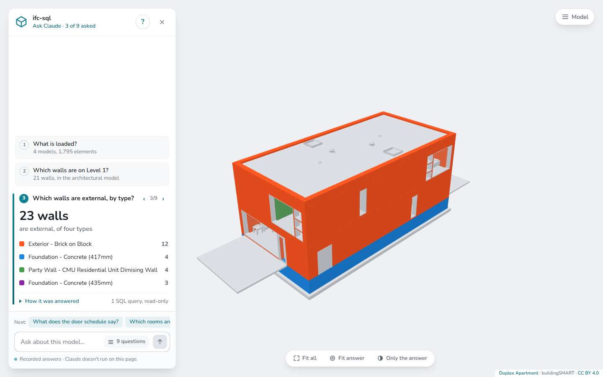

The two remaining parts. The "?" button opens an explainer in the style of your CV's project pop-up: a picture, three numbers, then how it works and why it helps. The Model button opens a panel on the right with everything that is shown. Both use "Ask Claude".
The ? button, as the demo shows it

Questions in plain language about Revit's IFC exports, answered from a database and shown in 3D.
Your Revit IFC exports go into a database as they are. Mixed units and packed names are untangled on the way in.
Ask Claude in your own words. It answers with read-only queries, so it can't change a model.
Each answer lights up here: the walls, doors or rooms it found, and how it found them.
About this demo. The Duplex Apartment: four models (architecture, mechanical, electrical, plumbing) by buildingSMART, CC BY 4.0. Nine questions, answered by the real tools and recorded. Claude doesn't run on this page.
In the local app, the last box reads instead
Connect Claude. Add ifc-sql to Claude Desktop or Claude Code once. Keep this page open and ask Claude there: whatever it looks up lights up here. Asking from this page comes in the next version.
The Model button: what is shown